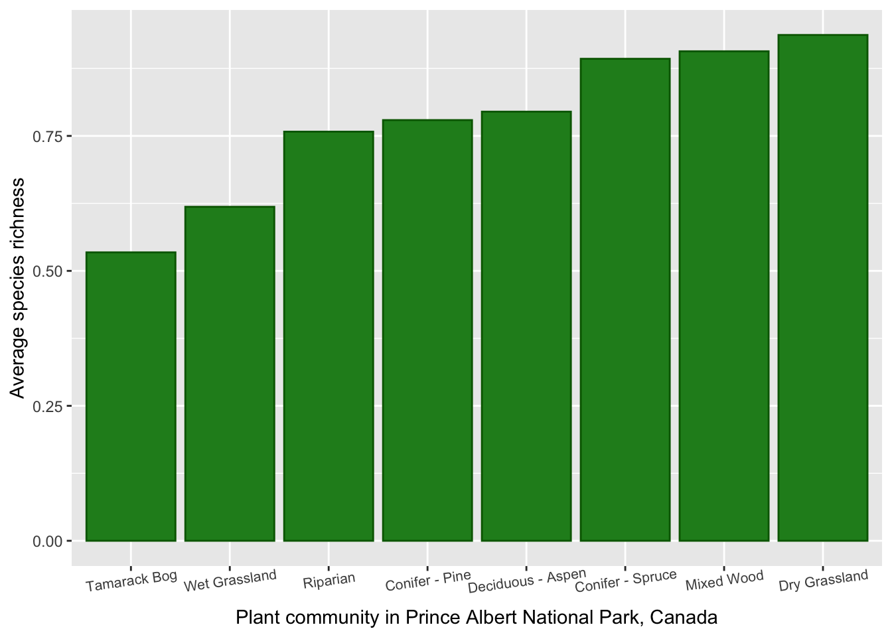
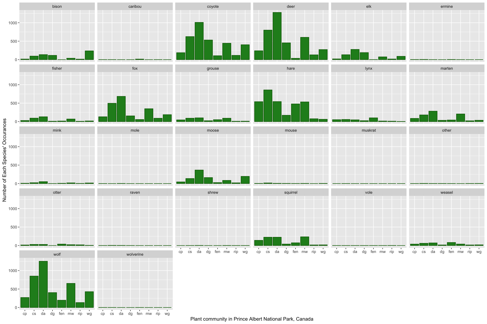
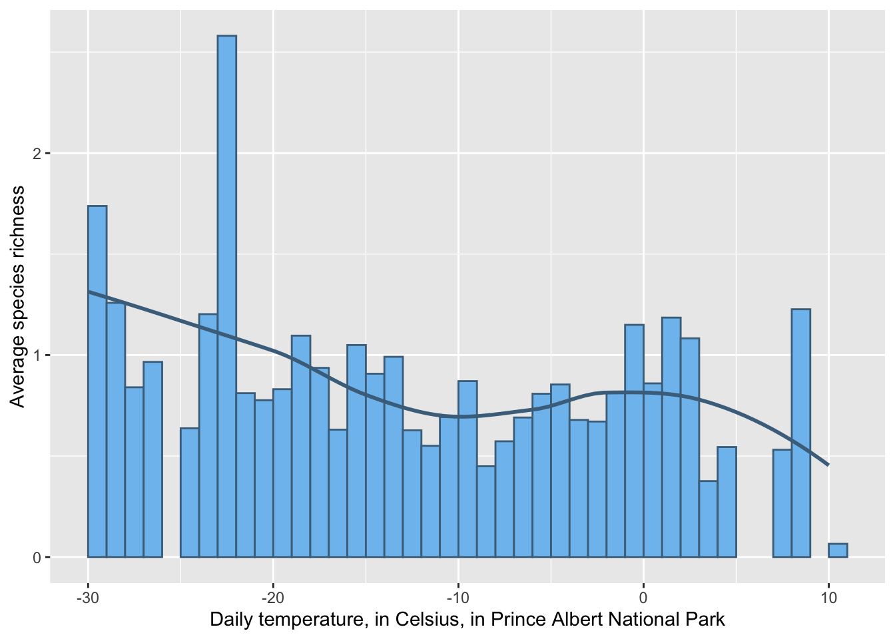
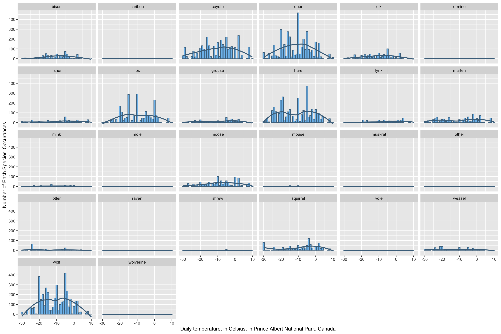
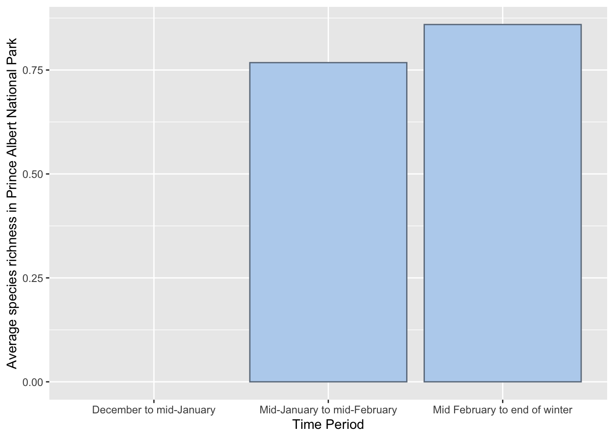

Warning: There were 2 warnings in `mutate()`.
The first warning was:
ℹ In argument: `cloudcover = as.numeric(cloudcover)`.
Caused by warning:
! NAs introduced by coercion
ℹ Run `dplyr::last_dplyr_warnings()` to see the 1 remaining warning.
mammal_clean |>select(plantcomm, richness) |>group_by(plantcomm) |>summarise(rich_avg =mean(richness, na.rm =TRUE)) |>ggplot() +geom_col(mapping =aes(x =fct_reorder(plantcomm, rich_avg), y = rich_avg), fill ="forestgreen",color ="darkgreen") +labs(x ="Plant community in Prince Albert National Park, Canada", y ="Average species richness") +scale_x_discrete(labels=c("cp"="Conifer - Pine", "cs"="Conifer - Spruce", "da"="Deciduous - Aspen", "dg"="Dry Grassland", "fen"="Tamarack Bog", "mw"="Mixed Wood", "rip"="Riparian", "wg"="Wet Grassland")) +theme(axis.text.x =element_text(size =8, angle =8))

mammal_clean |>select(plantcomm, deer, moose, elk, wolf, coyote, fox, caribou, lynx, fisher, marten, bison, mink, otter, grouse, hare, weasel, ermine, mouse, raven, squirrel, wolverine, muskrat, mole, shrew, vole, other) |>pivot_longer(cols =2:27, names_to ="mammal",values_to ="presence") |>group_by(mammal, plantcomm) |>tally(presence) |>ggplot() +geom_col(mapping =aes(x = plantcomm, y = n),fill ="forestgreen",color ="darkgreen") +facet_wrap(~mammal) +labs(x ="Plant community in Prince Albert National Park, Canada", y ="Number of Each Species' Occurances")

mammal_clean |>select(temp, richness) |>group_by(temp) |>summarise(rich_avg =mean(richness, na.rm =TRUE)) |>ggplot() +geom_col(mapping =aes(x = temp, y = rich_avg),fill ="skyblue2",color ="skyblue4",just =0,width =1) +labs(x ="Daily temperature, in Celsius, in Prince Albert National Park", y ="Average species richness") +geom_smooth(method =NULL,mapping =aes(x = temp, y = rich_avg), color ="skyblue4", linetype ="solid",se =FALSE)
`geom_smooth()` using method = 'loess' and formula = 'y ~ x'
Warning: Removed 1 row containing non-finite outside the scale range
(`stat_smooth()`).
Warning: Removed 1 row containing missing values or values outside the scale range
(`geom_col()`).

mammal_clean |>select(temp, deer, moose, elk, wolf, coyote, fox, caribou, lynx, fisher, marten, bison, mink, otter, grouse, hare, weasel, ermine, mouse, raven, squirrel, wolverine, muskrat, mole, shrew, vole, other) |>pivot_longer(cols =2:27, names_to ="mammal",values_to ="presence") |>group_by(mammal, temp) |>tally(presence) |>ggplot() +geom_col(mapping =aes(x = temp, y = n),fill ="skyblue2",color ="skyblue4") +facet_wrap(~mammal) +labs(x ="Daily temperature, in Celsius, in Prince Albert National Park, Canada", y ="Number of Each Species' Occurances") +geom_smooth(method =NULL,mapping =aes(x = temp, y = n), color ="skyblue4", linetype ="solid",se =FALSE)
`geom_smooth()` using method = 'loess' and formula = 'y ~ x'
Warning: Removed 26 rows containing non-finite outside the scale range
(`stat_smooth()`).
Warning: Removed 26 rows containing missing values or values outside the scale range
(`geom_col()`).

mammal_clean |>select(periodnum, richness) |>group_by(periodnum) |>summarise(rich_avg =mean(richness)) |>ggplot() +geom_col(mapping =aes(x =factor(periodnum), y = rich_avg), fill ="slategray2",color ="slategray4") +labs(x ="Time Period", y ="Average species richness in Prince Albert National Park") +scale_x_discrete(labels=c("1"="December to mid-January", "2"="Mid-January to mid-February", "3"="Mid February to end of winter"))
Warning: Removed 1 row containing missing values or values outside the scale range
(`geom_col()`).

mammal_clean |>select(periodnum, deer, moose, elk, wolf, coyote, fox, caribou, lynx, fisher, marten, bison, mink, otter, grouse, hare, weasel, ermine, mouse, raven, squirrel, wolverine, muskrat, mole, shrew, vole, other) |>pivot_longer(cols =2:27, names_to ="mammal",values_to ="presence") |>group_by(mammal, periodnum) |>tally(presence) |>ggplot() +geom_col(mapping =aes(x = periodnum, y = n),fill ="slategray2",color ="slategray4") +facet_wrap(~mammal) +labs(x ="Time Period", y ="Number of Each Species' Occurances in Prince Albert National Park")